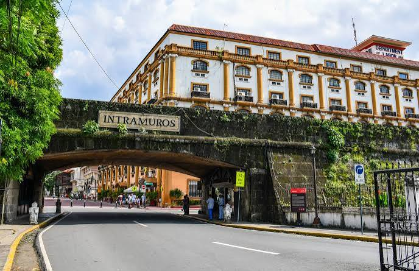
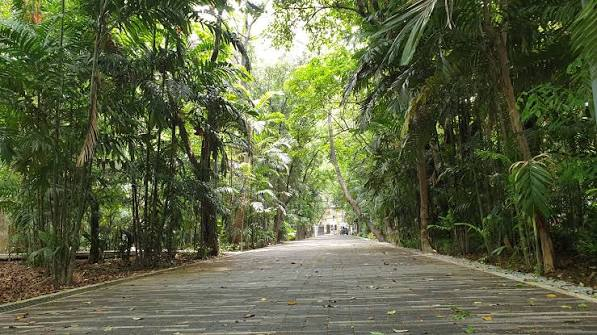
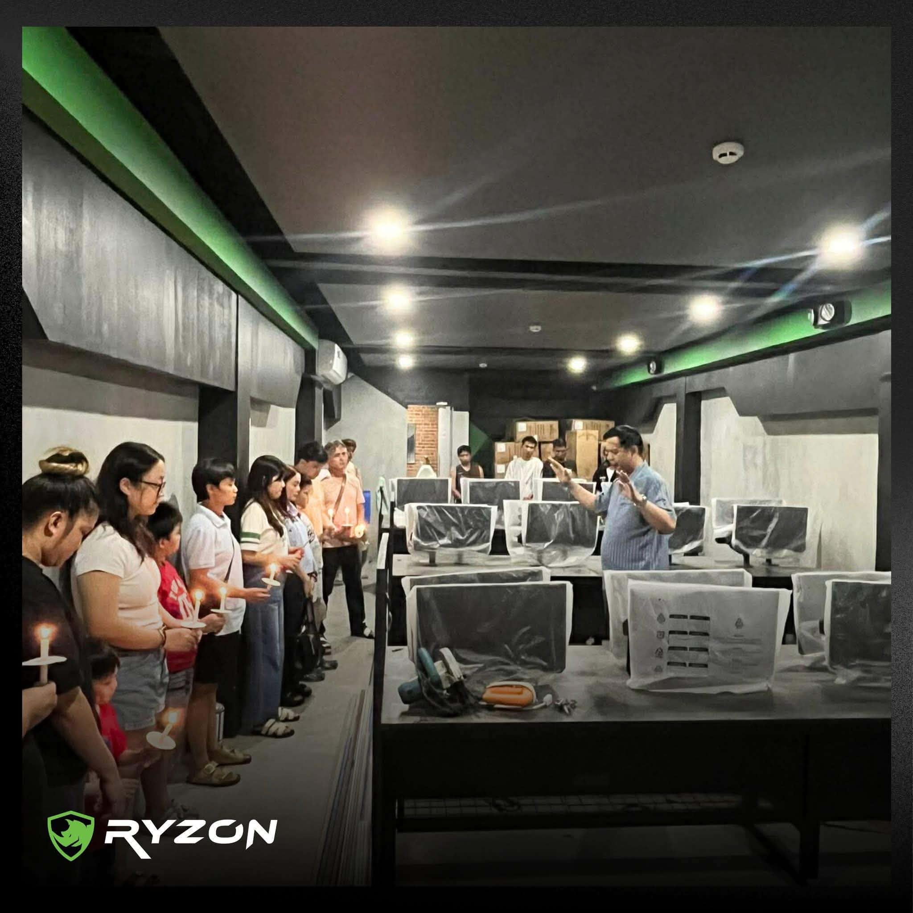

Intramuros
Historic Area in Manila
Intramuros is a tourist spot near TUP, and it can also be a great place to hang out during vacant hours, where you can eat because there are food stalls nearby.

Read more
Discover spots where you can eat, hang out, and relax with your friends, all within easy reach of TUP.
Historic Area in Manila
Intramuros is a tourist spot near TUP, and it can also be a great place to hang out during vacant hours, where you can eat because there are food stalls nearby.

Urban Forest Park in Ermita, Manila
Arroceros Forest Park is a peaceful place where we can relax, take a break from school, and enjoy nature in the middle of Manila. It is also a nice place to walk around and spend time with friends.

Internet Cafe infront of TUP Gate 4
Ryzon Internet Cafe because is a convenient place for students to play games, use computers, and spend time with friends during their free time. It is also a good option when you need access to a computer for school-related tasks.
